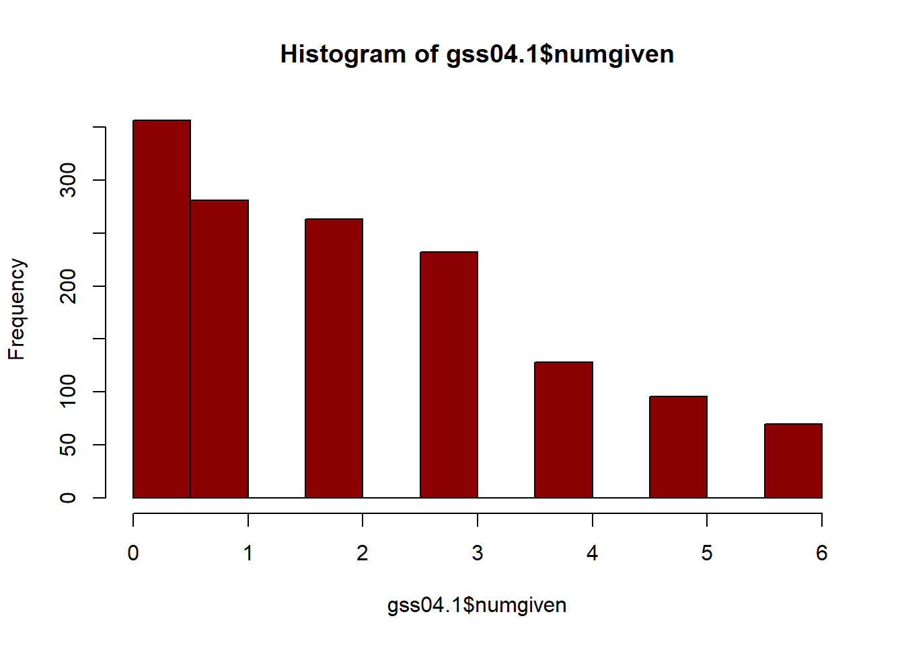
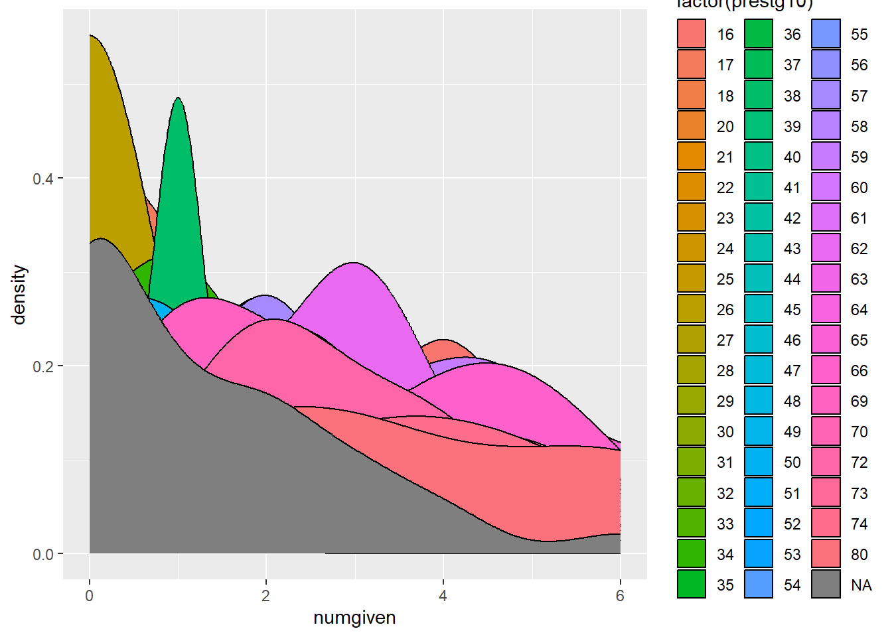
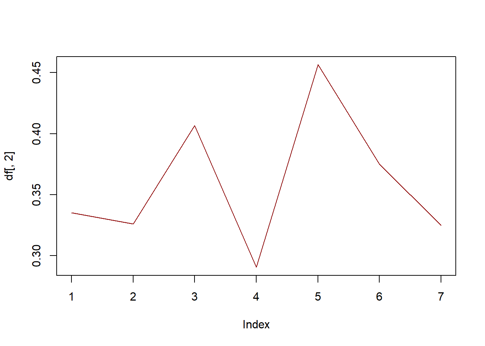

This study uses social network data from the 2004 General Social Survey (GSS) to examine group network structure and investigate possible relationships with support for welfare state expansion as measured by increased spending.Close social networks are strong determinants of an individuals views and opinions and may influence their perspectives on public policy. Results indicate that there is a significant positive effect where support for welfare spending increases as network size increases.
Research Question
How does interpersonal group network structure affect support for welfare spending?
This study uses social network data from the 2004 General Social Survey (GSS) to examine group network structure and investigate possible relationships with support for welfare state expansion as measured by increased spending. Close social networks are strong determinants of an individuals views and opinions and may influence their perspectives on public policy. This can be due to the influence of specific actors that make up those networks or due to the structure of the network themselves. This study focuses on the role network characteristics, such as size and strength, pay in influencing an individual’s response to whether government should spend more on social support programs.
While networks groups may form for different reasons, including as a way of gaining useful policy information (Carpenter,2003), once formed one can imagine potential influences of close social groups working in multiple ways. A population with a preponderance of tight, family based social networks compared to one with more networks with fewer nodes and looser relationships may either place less value on state social services, being redundant to the ego network’s own role, or may have the opposite effect. The parallels between state and social network roles may instead help foster greater understanding and value of state welfare programs. Network impact may also be a function of norm enforcing behavior as previously suggested (Pisorski, 2017) where dense networks lead to more frequent punishment and fewer norm violations.
Investigation into this topic can be helpful in broadening understanding about how social network structures and characteristics may shape a certain population’s views and interactions with government welfare policy. This study builds on previous research into the role of networks on public policy such as Fernandez and Gould’s 1994 showing the importance of brokerage positions in communication networks in health policy. Similar to Rolfe’s 2012 “Education and High-Salience Elections,” where the author draws on 1985 GSS data to study how education impacts voting behavior, this study utilizes the 2004 GSS data set which provides data points needed for an ego network as well as important corresponding variables.
The unique measures provided by the 2004 GSS dataset also enables this study to utilize interaction data, similar to Schein et al.’s use in the case of country to country analysis, but at the interpersonal level. Interaction can be represented in two ways; using the ‘close’ variable based on overall respondent perception of closeness, and the “talkto” variable which captures interaction based on interpersonal conversation frequency. As previously highlighted (Heider, 1946), interpersonal attitudes are strong influences of unit formation. These variables, in addition to impacting overall respondent alter selection, as measured by the variable numgiven, capture both the degree and strength formed network units.
The influence of the ego node, the respondent, and of the other alter nodes, is another focal point of the analysis. By looking at “which actors are perceived as influential, and how influence is structured, similar to Lewis 2006’s work on health policy, this study provides a similar investigation into circumstances behind how powerful actors shape responses to state policy. Looking at measures such as ethnic diversity may also be highly relevant as greater diversity has been found to correlate with more negative attitudes towards the welfare state (Stichnoth & Van der Straeten 2013) while other studies (Wlezien & Soroka, 2021) have indicated that individual-level factors in demographics matter little to the temporal variation of welfare preferences.With ego network density we can see how network strength and density may affected respondents which may,for example, receive less welfare benefits compared to less-wealthy peers.
Hypothesis
Greater personal network size is positively correlated to increased support for government welfare spending.
Networks with stronger ties are correlated with decreased support for government spending.
In Rolfe’s 2012 study people embedded in larger social network contexts were more likely to vote compare to those with smaller networks. This hypothesis tests a similar relationship towards government welfare spending support. This could be due to factors such as where having a large network increases the respondent’s probability of having a contact that would benefit from increased state support. This personal connect may be what motivates an otherwise disinterested respondent to support increased spending.The nature of social relationships described by GSS respondents may given insight into those respondents corresponding policy preferences. This may be as a factor their ego network size, such as the number of contact nodes connected to, or more as a result of the strength of those ties such as measured by edge weight in terms of respondent indicated familiarity score.The networks’ characteristics themselves may reveal insights about the populations support for welfare policies. We can look at factors such as network homogeneity by variables such as race, education, and relationship type.
Description
Data set
This data set is drawn from the General Social Survey (GSS) which is a nationally representative survey of adults in the United States conducted since 1972. The vast majority of GSS data is obtained in face-to-face interviews although some interviews are also conducted with computer-assisted interviewing and through phone interviews. The GSS contains a standard core of demographic, behavioral, and attitudinal questions including questions covering civil liberties, national spending priorities, psychological well-being, social mobility, and traumatic events. The 2004 GSS additionally contains measures of personal social networks including personal characteristics of friends and respondents’ contacts and measures of relationship strength. Survey participants provided a list of up to six people with whom they “discussed important matters,” and then provide additional information about each of those contacts.The original full data set is in edge list format and consists of 1261 columns and 2812 rows.
Once transformed into a matrix network format, the data consists of nodes based on survey respondents and their stated personal contact allowing for person level analysis. Here we have 5 nodes. Ties are based on scores from the variables “close” which measure respondents’ perceptions of the closeness of their reported contacts, to the respondent and to each other. Scores are on a three point scale from especially close, to know each other, to total strangers. This enables the ties in our network to be accordingly weighted.Each network consists of multiple separate ego networks centered around each GSS respondent and their stated contacts. Within each ego network the number and strength of ties between nodes varies. With this network data the respondents become ego nodes and their listed contacts are alters.
IVs
numgiven - This a measure of ego-centered or Core Network Size (Wasserman and Faust 1994 ), a count from 0 to 5 of the number of contacts provided by each respective survey respondent.
Contact-alter related variables:
Spouse1, spouse2, spouse3 (to 5); parent1, sibling1, child1, othfam1, cowork1, memgrp1, neighbr1, friend1, advisor1, other1 - These measures denote the type of relationship per contact by respondent provided contact number. For example, spouse1 indicates that the first contact provided by that respondent is a spouse. All variables, and those similarly formatted below, range from 1 to 5 corresponding to the respective contact’s number as provided by the respondent.
close12, close13, close14, close15, close23, close24, close25, close34, close35, close45 - This variable is the respondent provided weight measure of the indicated relationship. For example, close12 provides a measure of the closeness of the relationship between respondent provided contacts 1 and 2.
talkto1 how often does r talk to person #1? - This measure represents the respondent’s estimate of the strength of each possible dyadic tie between the respondent and indicated contact.
educ1 - Respondent provided contact education level, capturing 1 to graduate levels, on a 7 point scale.
age1 - Contact age.
relig1 - Contact religion with options of Protestant, Catholic, Jewish, none, or other.
sex1 - Contact gender, either male - 1, or female - 2.
race1 - Contact race in terms of Asian, Black, Hispanic, White, or Other.
yrskwn1 - Years the respondent as known that contact.
Respondent-ego variables:
income - Respondent’s total family income.
age - Age of respondent.
region - Region of interview.
sex - Respondent’s sex.
degree - Respondent’s education level in terms of highest degree.
race - Respondent’s race.
relig - Respondent’s religious preference.
prestg10 - Respondent’s occupational prestige score based on the 2010 Census occupation classification. This standard prestige score is a simple mean value of ratings for each occupation category, converted to a scale of 0 (bottom) to 100 (top).
attend - How often the respondent attends religious services.
partyid - Respondent’s political party affiliation.
DV
natfare - A 3 point scale of respondent’s perspective on government welfare spending
Set up
The full 2004 GSS data set can be accessed directly in R from the kjhealy github page.
Code
remotes::install_github("kjhealy/gssr")
Skipping install of 'gssr' from a github remote, the SHA1 (abe949b1) has not changed since last install.
Use `force = TRUE` to force installation
Setting up data frame - We can look at the relationship between respondents and their reported contacts in terms of relevant attributes by looking at the full data frame of relevant variables only. Given that the alter descriptions are present for all 5 possible contact spots this leaves us with 115 variables.
Ego network creation - To create an ego network based on the respondents and their provided contacts we can extract the relevant “close” columns. This gives us the links as well as the weighted strength of those links, respondent to contact as well as contact to contact.
Code
ties <- gss04.1[,grepl("close", colnames(gss04.1))]head(ties)
We can then set up a matrix based on the maximum possible number of alters, filled with the values of any respondent, and make the matrix symmetrical as the “close” tie is mutual. Missing respondents can also be excluded and the diagonal set to zero. Finally the matrix can be used to create a single respondent network that is undirected and weighted.
To incorporate multiple networks together we can use a function to turn every row into an ego network and combine them together.
Code
make_ego_nets <-function(tie){# make the matrix mat =matrix(nrow =5, ncol =5)# assign the tie values to the lower triangle mat[lower.tri(mat)] <-as.numeric(tie)# symmetrize mat[upper.tri(mat)] =t(mat)[upper.tri(mat)]# identify missing values na_vals <-is.na(mat)# identify rows where all values are missing non_missing_rows <-rowSums(na_vals) <nrow(mat)# if any rows if(sum(!non_missing_rows) >0){ mat <- mat[non_missing_rows,non_missing_rows] }diag(mat) <-0 ego_net <-graph.adjacency(mat, mode ="undirected", weighted = T)return(ego_net)}ego_nets <-lapply(1:nrow(ties), FUN =function(x) make_ego_nets(ties[x,]))head(ego_nets)
We can first understand the characteristics of our sample. The histogram below shows the overall distribution of network sizes for the sample population.We can see that the distribution is skewed towards a smaller network size
Code
hist(gss04.1$numgiven, col="darkred")

We see how network density breaks down across sample segments by comparing with variables such as race and income. Looking at how ego network density corresponds to age we can see the response density is highest for 1 and 6 contacts with peaks around age 35 for those reporting 1 contact and age 50 for those reporting 6 contacts.Job prestige also seems related to network density with more lower prestige job respondents corresponding with less dense networks.
Code
gss04.1%>%ggplot(aes(x = numgiven, fill =factor(race))) +geom_histogram()
Don't know how to automatically pick scale for object of type
<haven_labelled/vctrs_vctr/double>. Defaulting to continuous.
`stat_bin()` using `bins = 30`. Pick better value with `binwidth`.
gss04.1%>%ggplot(aes(x = numgiven, fill =factor(income))) +geom_histogram()
Don't know how to automatically pick scale for object of type
<haven_labelled/vctrs_vctr/double>. Defaulting to continuous.
`stat_bin()` using `bins = 30`. Pick better value with `binwidth`.
Warning: Groups with fewer than two data points have been dropped.
Warning in max(ids, na.rm = TRUE): no non-missing arguments to max; returning
-Inf

When comparing with a histogram we can see that, aside from the increase in NAs, there seems to be little difference in the density of ego networks in relation to respondent perspectives on whether government should increase welfare spending. Looking closer we see slight peaks at 3 and 5 reported contacts.
Code
gss04.1%>%ggplot(aes(x = natfare, fill =factor(numgiven))) +geom_histogram()
Don't know how to automatically pick scale for object of type
<haven_labelled/vctrs_vctr/double>. Defaulting to continuous.
`stat_bin()` using `bins = 30`. Pick better value with `binwidth`.
df <-table(gss04.1$numgiven, gss04.1$natfare) /rowSums(table(gss04.1$numgiven, gss04.1$natfare))plot(df[, 2], col ='darkred', type ='l')

Community role structure
Looking at the plot of our variable ego_net we can see that this network has 4 nodes which are all connected forming a clique. All the ties are mutual and edge attribute is by weight. This sole component has a mean of 1.67.
Taking our variable which contains the whole network list we can look at another random network, like the 131st ego net. This network is in the form of a completely connected triad.
In our ego network all nodes are balanced and share the same in degree and out degree of 3 since they are all mutually connected. Accordingly, network centralization score is 0 as there is no central node.This means there is no highly central or powerful actors and no brokerage power. In this network all nodes are freely able to access and communicate with one another. This indicates all alters are able to influence the ego node’s policy preferences.
Similarly if we use Bonacich’s power centrality measure we find a value of -1 for all vertices. This makes sense given the clique structure of the network.
Code
head(power_centrality(ego_net))
[1] -1 -1 -1 -1
Looking at closeness centralization index and closeness centralization indices tell the same story. While our current sample is perfectly uncentralized, other samples of single networks likely have different structures.
Code
centr_clo(ego_net)$centralization
[1] 0
Code
centr_betw(ego_net,directed=F)$centralization
[1] 0
When looking for communities in our ego network,leading label and walktrap algorithms also confirms prior analyses given the nature of our sample since the distance between all nodes are equal.
We can also use Eigenvector analysis to show this mutual relationship between nodes. Comparing the three community partitioning methods yields the same result of 0 communities.
The preferred model to test the representativity of our ego network is the CUG test. According to the results of the model, this network is highly representative. This is likely due to the limited nature of our measure as “ego_net” represents a single respondent’s relationships and our random respondent has only 4 connections in total which are all mutual.Measures of density including network density and logistic density both show a value of 1 similar to prior results. Transitivity is 1 for both global and average since each node is only directly connected to each other.
Code
gden(ego.statnet)
[1] 1
Code
transitivity(ego_net)
[1] 1
Code
transitivity(ego_net, type="global")
[1] 1
Code
transitivity(ego_net, type="average")
[1] 1
When we compare network transitivity to null conditional on size using the Conditional Uniform Graphs test with 1000 replications we get an observed value of 1 with a very high p-value which indicates the observed outcome is highly similar to the simulated networks. We can also see this in t-statistic between observed and simulated networks.
A similar outcome is also observed when we change the number of replications to 100 instead. Looking at in degree and directed versions of CUG also supports this relationship.
If we instead apply a linear regression model to examine the impact of ego networks we can see that our full model, with all respondent’s variables together, is not statistically significant in predicting support for increased welfare spending. Limiting the model to only the impact of network size on welfare spending support there is a significant positive effect of increased size on spending but the model has low predictive power.
Code
lm_1<-lm(natfare ~ numgiven + income + age + region +sex + degree ++ race + relig + prestg10 + attend + partyid , data=gss04.1, na.action = na.exclude)summary(lm_1)
Call:
lm(formula = natfare ~ numgiven + income + age + region + sex +
degree + +race + relig + prestg10 + attend + partyid, data = gss04.1,
na.action = na.exclude)
Residuals:
Min 1Q Median 3Q Max
-1.56230 -0.58540 0.00346 0.63463 1.56928
Coefficients:
Estimate Std. Error t value Pr(>|t|)
(Intercept) 1.282e+00 2.671e-01 4.800 2.03e-06 ***
numgiven -7.071e-03 1.803e-02 -0.392 0.69514
income 7.380e-02 1.513e-02 4.877 1.39e-06 ***
age -5.314e-04 2.029e-03 -0.262 0.79355
region 1.248e-02 1.297e-02 0.962 0.33641
sex 9.919e-03 6.437e-02 0.154 0.87759
degree -5.955e-02 3.218e-02 -1.851 0.06474 .
race -1.559e-01 5.733e-02 -2.720 0.00673 **
relig -8.384e-03 1.393e-02 -0.602 0.54750
prestg10 -2.280e-06 2.969e-03 -0.001 0.99939
attend 3.363e-03 1.240e-02 0.271 0.78639
partyid 9.643e-02 1.526e-02 6.321 5.22e-10 ***
---
Signif. codes: 0 '***' 0.001 '**' 0.01 '*' 0.05 '.' 0.1 ' ' 1
Residual standard error: 0.7562 on 574 degrees of freedom
(2226 observations deleted due to missingness)
Multiple R-squared: 0.1327, Adjusted R-squared: 0.116
F-statistic: 7.982 on 11 and 574 DF, p-value: 5.221e-13
Call:
lm(formula = natfare ~ numgiven, data = gss04.1, na.action = na.exclude)
Residuals:
Min 1Q Median 3Q Max
-1.18845 -1.06917 -0.08905 0.87119 0.93083
Coefficients:
Estimate Std. Error t value Pr(>|t|)
(Intercept) 2.06917 0.04631 44.683 <2e-16 ***
numgiven 0.01988 0.01678 1.185 0.237
---
Signif. codes: 0 '***' 0.001 '**' 0.01 '*' 0.05 '.' 0.1 ' ' 1
Residual standard error: 0.7997 on 686 degrees of freedom
(2124 observations deleted due to missingness)
Multiple R-squared: 0.002042, Adjusted R-squared: 0.0005868
F-statistic: 1.403 on 1 and 686 DF, p-value: 0.2366
Conclusion
The study finds that there is a significant positive effect where support for welfare spending increases as network size increases. This result has low predictive power. With the ego network tested we also found a clique network where all nodes are mutually connected and able to influence the respondent’s policy decision making. Due to the nature of the survey however, which consists of multiple individual ego networks, this applies to only the example random network used. The nature of other ego networks vary which most respondents reporting no or only 1 contact. This preponderance in small ego network size is especially significant. As mean network size has decreased by about a third, from 2.94 in 1985 to 2.08 in 2004, (McPherson et al., 2006) this means that individual are being less influenced by inter-personal contacts compared to other forms of political and policy influence.
While this analysis was helpful in identifying the nature and significance of ego nodes we are missing some insights into directionality. As previously noted, (Lazer et al., 2010) individuals shift their political views toward the political views of their associates. We are missing information that may better indicate the actual levels and directionality of influence of specific nodes. Each ego network, especially in terms of upper limit, is also a constrained model and limited by the options imposed on respondents due to the nature of the survey. This makes the results not truly representative of the range of connections possible to individuals to reality although, since many networks are small and fall under this threshold, any effect may be limited. Additionally, as measures on important alter variables, such as contact gender, age, and relationship link strength, derive solely from the respondent the are vulnerable to biases in respondent perception. This may skew results and would require a more extensive study to determine the extent of any discrepencies.
Bibliography
Brandes, U., Kenis, P., & Wagner, D. (2003). Communicating centrality in policy network drawings. IEEE transactions on visualization and computer graphics, 9(2), 241-253.
Carpenter, D., Esterling, K., & Lazer, D. (2003). The strength of strong ties: A model of contact-making in policy networks with evidence from US health politics. Rationality and Society, 15(4), 411-440.
Creating Co-Author Networks in R. (2023). University of California, Davis. https://datalab.ucdavis.edu/2019/08/27/creating-co-author-networks-in-r/
Fernandez, R. M., & Gould, R. V. (1994). A dilemma of state power: Brokerage and influence in the national health policy domain. American journal of Sociology, 99(6), 1455-1491.
Fowler, J. H., Heaney, M. T., Nickerson, D. W., Padgett, J. F., & Sinclair, B. (2011). Causality in political networks. American politics research, 39(2), 437-480.
Goodreau, S. M., Handcock, M. S., Hunter, D. R., Butts, C. T., & Morris, M. (2008). A statnet tutorial. Journal of statistical software, 24, 1-26.
Hanneman, R. and Riddle. M. (2005). Introduction to Social Network Methods. Riverside, CA: University of California, Riverside. (Published online.)
Healy K (2019). gssr: General Social Survey data for use in R. R package version 0.2.0, http://kjhealy.github.io/gssr.
Heider, F. (1946). Attitudes and cognitive organization. The Journal of psychology, 21(1), 107-112.
Hoffman, M. (2021). Methods for Network Analysis. https://bookdown.org/markhoff/social_network_analysis/ego-networks.html
Huckfeldt, R., & Sprague, J. (1987). Networks in context: The social flow of political information. American Political Science Review, 81(4), 1197-1216.
Jackson, M. (2008). Social and economic networks. Princeton: Princeton University Press.
Jan Piskorski, M., & Gorbatâi, A. (2017). Testing Coleman’s social-norm enforcement mechanism: Evidence from Wikipedia. American Journal of Sociology, 122(4), 1183-1222.
Lazer, D., Rubineau, B., Chetkovich, C., Katz, N., & Neblo, M. (2010). The coevolution of networks and political attitudes. Political Communication, 27(3), 248-274.
Lewis, J. M. (2006). Being around and knowing the players: networks of influence in health policy. Social science & medicine, 62(9), 2125-2136.
Matthews, J. S., & Erickson, L. (2008). Welfare state structures and the structure of welfare state support: Attitudes towards social spending in Canada, 1993–2000. European Journal of Political Research, 47(4), 411-435.
McPherson, M., Smith-Lovin, L., & Brashears, M. E. (2008). Social isolation in America: Changes in core discussion networks over two decades. American Sociological Review, 73(6), 1022-1022.
Moene, K. O., & Wallerstein, M. (2003). Targeting and political support for welfare spending. Conflict and governance, 33-54.
National Opinion Research Center (2004). General Social Survey. Ann Arbor, MI: Inter-university Consortium for Political and Social Research [distributor], 2016-06-30. https://doi.org/10.3886/ICPSR35328.v3
Rolfe, M. (2012). Voter turnout. Cambridge Books. Chapter 7 - Education and High-Salience Elections pp. 125-150
Schein, A., Zhou, M., Blei, D., & Wallach, H. (2016, June). Bayesian poisson tucker decomposition for learning the structure of international relations. In International Conference on Machine Learning (pp. 2810-2819). PMLR.
Stichnoth, H., & Van der Straeten, K. (2013). Ethnic diversity, public spending, and individual support for the welfare state: A review of the empirical literature. Journal of Economic Surveys, 27(2), 364-389.
Wasserman, S., and Faust, K. (1994). Social network analysis: Methods and applications Cambridge University Press.
Wlezien, C., & Soroka, S. (2021). Trends in public support for welfare spending: how the economy matters. British Journal of Political Science, 51(1), 163-180.
Source Code
---title: "Final Project"author: "Ken Docekal"desription: "Ego Networks and Support for Social Spending"date: "05/20/2023"format: html: toc: true code-fold: true code-copy: true code-tools: true---```{r setup, include=FALSE}knitr::opts_chunk$set(echo =TRUE)library(tidyverse)library(igraph)library(statnet)library(drat)library(reshape)library(gssr)```## IntroductionThis study looks uses social network data from the 2004 General Social Survey (GSS) to examine group network structure and investigate possible relationships with support for welfare state expansion as measured by increased spending.Close social networks are strong determinants of an individuals views and opinions and may influence their perspectives on public policy. Results indicate that there is a significant positive effect where support for welfare spending increases as network size increases.### Research QuestionHow does interpersonal group network structure affect support for welfare spending?This study looks uses social network data from the 2004 General Social Survey (GSS) to examine group network structure and investigate possible relationships with support for welfare state expansion as measured by increased spending. Close social networks are strong determinants of an individuals views and opinions and may influence their perspectives on public policy. This can be due to the influence of specific actors that make up those networks or due to the structure of the network themselves. This study focuses on the role network characteristics, such as size and strength, pay in influencing an individual's response to whether government should spend more on social support programs.While networks groups may form for different reasons, including as a way of gaining useful policy information (Carpenter,2003), once formed one can imagine potential influences of close social groups working in multiple ways. A population with a preponderance of tight, family based social networks compared to one with more networks with fewer nodes and looser relationships may either place less value on state social services, being redundant to the ego network's own role, or may have the opposite effect. The parallels between state and social network roles may instead help foster greater understanding and value of state welfare programs. Network impact may also be a function of norm enforcing behavior as previously suggested (Pisorski, 2017) where dense networks lead to more frequent punishment and fewer norm violations.Investigation into this topic can be helpful in broadening understanding about how social network structures and characteristics may shape a certain population's views and interactions with government welfare policy. This study builds on previous research into the role of networks on public policy such as Fernandez and Gould's 1994 showing the importance of brokerage positions in communication networks in health policy. Similar to Rolfe's 2012 "Education and High-Salience Elections," where the author draws on 1985 GSS data to study how education impacts voting behavior, this study utilizes the 2004 GSS data set which provides data points needed for an ego network as well as important corresponding variables.The unique measures provided by the 2004 GSS dataset also enables this study to utilize interaction data, similar to Schein et al.'s use in the case of country to country analysis, but at the interpersonal level. Interaction can be represented in two ways; using the 'close' variable based on overall respondent perception of closeness, and the "talkto" variable which captures interaction based on interpersonal conversation frequency. As previously highlighted (Heider, 1946), interpersonal attitudes are strong influences of unit formation. These variables, in addition to impacting overall respondent alter selection, as measured by the variable numgiven, capture both the degree and strength formed network units.The influence of the ego node, the respondent, and of the other alter nodes, is another focal point of the analysis. By looking at "which actors are perceived as influential, and how influence is structured, similar to Lewis 2006's work on health policy, this study provides a similar investigation into circumstances behind how powerful actors shape responses to state policy. Looking at measures such as ethnic diversity may also be highly relevant as greater diversity has been found to correlate with more negative attitudes towards the welfare state (Stichnoth & Van der Straeten 2013) while other studies (Wlezien & Soroka, 2021) have indicated that individual-level factors in demographics matter little to the temporal variation of welfare preferences.With ego network density we can see how network strength and density may affected respondents which may,for example, receive less welfare benefits compared to less-wealthy peers.### HypothesisGreater personal network size is positively correlated to increased support for government welfare spending.Networks with stronger ties are correlated with decreased support for government spending.In Rolfe's 2012 study people embedded in larger social network contexts were more likely to vote compare to those with smaller networks. This hypothesis tests a similar relationship towards government welfare spending support. This could be due to factors such as where having a large network increases the respondent's probability of having a contact that would benefit from increased state support. This personal connect may be what motivates an otherwise disinterested respondent to support increased spending.The nature of social relationships described by GSS respondents may given insight into those respondents corresponding policy preferences. This may be as a factor their ego network size, such as the number of contact nodes connected to, or more as a result of the strength of those ties such as measured by edge weight in terms of respondent indicated familiarity score.The networks' characteristics themselves may reveal insights about the populations support for welfare policies. We can look at factors such as network homogeneity by variables such as race, education, and relationship type.## Description### Data setThis data set is drawn from the General Social Survey (GSS) which is a nationally representative survey of adults in the United States conducted since 1972. The vast majority of GSS data is obtained in face-to-face interviews although some interviews are also conducted with computer-assisted interviewing and through phone interviews. The GSS contains a standard core of demographic, behavioral, and attitudinal questions including questions covering civil liberties, national spending priorities, psychological well-being, social mobility, and traumatic events. The 2004 GSS additionally contains measures of personal social networks including personal characteristics of friends and respondents' contacts and measures of relationship strength. Survey participants provided a list of up to six people with whom they "discussed important matters," and then provide additional information about each of those contacts.The original full data set is in edge list format and consists of 1261 columns and 2812 rows.Once transformed into a matrix network format, the data consists of nodes based on survey respondents and their stated personal contact allowing for person level analysis. Here we have 5 nodes. Ties are based on scores from the variables "close" which measure respondents' perceptions of the closeness of their reported contacts, to the respondent and to each other. Scores are on a three point scale from especially close, to know each other, to total strangers. This enables the ties in our network to be accordingly weighted.Each network consists of multiple separate ego networks centered around each GSS respondent and their stated contacts. Within each ego network the number and strength of ties between nodes varies. With this network data the respondents become ego nodes and their listed contacts are alters.IVsnumgiven - This a measure of ego-centered or Core Network Size (Wasserman and Faust 1994 ), a count from 0 to 5 of the number of contacts provided by each respective survey respondent.Contact-alter related variables:Spouse1, spouse2, spouse3 (to 5); parent1, sibling1, child1, othfam1, cowork1, memgrp1, neighbr1, friend1, advisor1, other1 - These measures denote the type of relationship per contact by respondent provided contact number. For example, spouse1 indicates that the first contact provided by that respondent is a spouse. All variables, and those similarly formatted below, range from 1 to 5 corresponding to the respective contact's number as provided by the respondent.close12, close13, close14, close15, close23, close24, close25, close34, close35, close45 - This variable is the respondent provided weight measure of the indicated relationship. For example, close12 provides a measure of the closeness of the relationship between respondent provided contacts 1 and 2.talkto1 how often does r talk to person #1? - This measure represents the respondent's estimate of the strength of each possible dyadic tie between the respondent and indicated contact.educ1 - Respondent provided contact education level, capturing 1 to graduate levels, on a 7 point scale.age1 - Contact age.relig1 - Contact religion with options of Protestant, Catholic, Jewish, none, or other.sex1 - Contact gender, either male - 1, or female - 2.race1 - Contact race in terms of Asian, Black, Hispanic, White, or Other.yrskwn1 - Years the respondent as known that contact.Respondent-ego variables:income - Respondent's total family income.age - Age of respondent.region - Region of interview.sex - Respondent's sex.degree - Respondent's education level in terms of highest degree.race - Respondent's race.relig - Respondent's religious preference.prestg10 - Respondent's occupational prestige score based on the 2010 Census occupation classification. This standard prestige score is a simple mean value of ratings for each occupation category, converted to a scale of 0 (bottom) to 100 (top).attend - How often the respondent attends religious services.partyid - Respondent's political party affiliation.DVnatfare - A 3 point scale of respondent's perspective on government welfare spending### Set upThe full 2004 GSS data set can be accessed directly in R from the kjhealy github page.```{r}remotes::install_github("kjhealy/gssr")drat::addRepo("kjhealy")gss04 <-gss_get_yr(2004)```This full data set contains 2812 rows of observations with 1 observation per survey respondent. There are 1261 columns of variables.```{r}head(gss04)dim(gss04)```Setting up data frame - We can look at the relationship between respondents and their reported contacts in terms of relevant attributes by looking at the full data frame of relevant variables only. Given that the alter descriptions are present for all 5 possible contact spots this leaves us with 115 variables.```{r}#subset variablesgss04.1=subset(gss04, select =c(numgiven,spouse1, spouse2, spouse3, spouse4, spouse5,parent1, parent2, parent3, parent4, parent5,sibling1, sibling2, sibling3, sibling4, sibling5,child1, child2, child3, child4, child5,othfam1, othfam2, othfam3, othfam4, othfam5, cowork1, cowork2, cowork3, cowork4, cowork5, memgrp1, memgrp2, memgrp3, memgrp4, memgrp5, neighbr1, neighbr2, neighbr3, neighbr4, neighbr5, friend1, friend2, friend3, friend4, friend5, advisor1, advisor2, advisor3, advisor4, advisor5, other1, other2, other3, other4, other5,close12, close13, close14, close15, close23, close24, close25, close34, close35, close45, talkto1, talkto2, talkto3, talkto4, talkto5,educ1, age1, relig1, sex1, race1, yrskwn1,educ2, age2, relig2, sex2, race2, yrskwn2, educ3, age3, relig3, sex3, race3, yrskwn3, educ4, age4, relig4, sex4, race4, yrskwn4, educ5, age5, relig5, sex5, race5, yrskwn5, income, age, region, sex, degree, race, relig, prestg10, attend, partyid, helppoor, helpnot, natfare, natfarey))dim(gss04.1) ```Ego network creation - To create an ego network based on the respondents and their provided contacts we can extract the relevant "close" columns. This gives us the links as well as the weighted strength of those links, respondent to contact as well as contact to contact.```{r}ties <- gss04.1[,grepl("close", colnames(gss04.1))]head(ties)```We can then set up a matrix based on the maximum possible number of alters, filled with the values of any respondent, and make the matrix symmetrical as the "close" tie is mutual. Missing respondents can also be excluded and the diagonal set to zero. Finally the matrix can be used to create a single respondent network that is undirected and weighted.```{r}mat =matrix(nrow =5, ncol =5)mat[lower.tri(mat)] <-as.numeric(ties[3,])mat[upper.tri(mat)] =t(mat)[upper.tri(mat)]na_vals <-is.na(mat)non_missing_rows <-rowSums(na_vals) <nrow(mat)mat <- mat[non_missing_rows,non_missing_rows]diag(mat) <-0matego_net <-graph.adjacency(mat, mode ="undirected", weighted = T)ego_net```To incorporate multiple networks together we can use a function to turn every row into an ego network and combine them together.```{r}make_ego_nets <-function(tie){# make the matrix mat =matrix(nrow =5, ncol =5)# assign the tie values to the lower triangle mat[lower.tri(mat)] <-as.numeric(tie)# symmetrize mat[upper.tri(mat)] =t(mat)[upper.tri(mat)]# identify missing values na_vals <-is.na(mat)# identify rows where all values are missing non_missing_rows <-rowSums(na_vals) <nrow(mat)# if any rows if(sum(!non_missing_rows) >0){ mat <- mat[non_missing_rows,non_missing_rows] }diag(mat) <-0 ego_net <-graph.adjacency(mat, mode ="undirected", weighted = T)return(ego_net)}ego_nets <-lapply(1:nrow(ties), FUN =function(x) make_ego_nets(ties[x,]))head(ego_nets)```We can then use ego_nets to get network_sizes and network_edge_counts and their means.```{r}network_sizes <-lapply(ego_nets, vcount)network_edge_counts <-lapply(ego_nets, ecount)head(network_sizes)head(network_edge_counts) network_sizes <-unlist(network_sizes)mean(network_sizes, na.rm = T)network_edge_counts <-unlist(network_edge_counts)mean(network_edge_counts, na.rm = T)```We then use the previous matrix to create a statnet version of the ego net as well, along with nodes and edges.```{r}ego.statnet =as.network(mat, directed =FALSE, names.eval ="edge.lwd", ignore.eval =FALSE)ego.statnet plot.network(ego.statnet, edge.col ="black", edge.lwd ="edge.lwd", label ="vertex.names", label.cex = .5, label.pad =0, label.pos =1)ego.nodes <-data.frame(id =1:length(ego.statnet%v%"vertex.names"),label = ego.statnet%v%"vertex.names",title = ego.statnet%v%"vertex.names",size =5*(2+ego.statnet%v%"size"))ego.edges <-data.frame(from=data.frame(as.edgelist(ego.statnet))$X1, to=data.frame(as.edgelist(ego.statnet))$X2)```## Analysis### Data ProfileWe can first understand the characteristics of our sample. The histogram below shows the overall distribution of network sizes for the sample population.We can see that the distribution is skewed towards a smaller network size```{r}hist(gss04.1$numgiven, col="darkred")```We see how network density breaks down across sample segments by comparing with variables such as race and income. Looking at how ego network density corresponds to age we can see the response density is highest for 1 and 6 contacts with peaks around age 35 for those reporting 1 contact and age 50 for those reporting 6 contacts.Job prestige also seems related to network density with more lower prestige job respondents corresponding with less dense networks.```{r}gss04.1%>%ggplot(aes(x = numgiven, fill =factor(race))) +geom_histogram()gss04.1%>%ggplot(aes(x = numgiven, fill =factor(income))) +geom_histogram()gss04.1%>%ggplot(aes(x = age, color =factor(numgiven))) +geom_density()gss04.1%>%ggplot(aes(x = numgiven, fill =factor(prestg10))) +geom_density()```When comparing with a histogram we can see that, aside from the increase in NAs, there seems to be little difference in the density of ego networks in relation to respondent perspectives on whether government should increase welfare spending. Looking closer we see slight peaks at 3 and 5 reported contacts.```{r}gss04.1%>%ggplot(aes(x = natfare, fill =factor(numgiven))) +geom_histogram()table(gss04.1$natfare)df <-table(gss04.1$numgiven, gss04.1$natfare) /rowSums(table(gss04.1$numgiven, gss04.1$natfare))plot(df[, 2], col ='darkred', type ='l')```### Community role structureLooking at the plot of our variable ego_net we can see that this network has 4 nodes which are all connected forming a clique. All the ties are mutual and edge attribute is by weight. This sole component has a mean of 1.67.```{r}plot(ego_net, vertex.size =30, vertex.label.color ="black", vertex.label.cex =1)igraph::dyad.census(ego_net)edge_attr_names(ego_net)vcount(ego_net)ecount(ego_net)print(ego_net)is_bipartite(ego_net)is_directed(ego_net)is_weighted(ego_net)names(igraph::components(ego_net))igraph::components(ego_net)$noigraph::components(ego_net)$csize igraph::components(ego_net)$nosummary(E(ego_net)$weight)graph.density(ego_net)graph.density(ego_net, loops=TRUE)igraph::degree(ego_net)summary(E(ego_net)$weight)head(ego_net)```The statnet version of our ego net gets us similar results.```{r}print(ego.statnet)gden(ego.statnet)gtrans(ego.statnet)```Taking our variable which contains the whole network list we can look at another random network, like the 131st ego net. This network is in the form of a completely connected triad.```{r}random_ego_net <- ego_nets[[131]]plot(random_ego_net)```### Prominent nodesIn our ego network all nodes are balanced and share the same in degree and out degree of 3 since they are all mutually connected. Accordingly, network centralization score is 0 as there is no central node.This means there is no highly central or powerful actors and no brokerage power. In this network all nodes are freely able to access and communicate with one another. This indicates all alters are able to influence the ego node's policy preferences.```{r}igraph::degree(ego_net,mode="in", loops =FALSE)igraph::degree(ego_net,mode="out", loops =FALSE)centr_degree(ego_net, loops =FALSE, mode="in")$centralizationcentr_degree(ego_net, loops =FALSE, mode="out")$centralization```When we use Eigenvector Centrality our finding of low centrality is confirmed as each vector has a value of 1.```{r}temp<-centr_eigen(ego_net,directed=T)names(temp)length(temp$vector)head(temp$vector)temp$centralization```Similarly if we use Bonacich's power centrality measure we find a value of -1 for all vertices. This makes sense given the clique structure of the network.```{r}head(power_centrality(ego_net))```Looking at closeness centralization index and closeness centralization indices tell the same story. While our current sample is perfectly uncentralized, other samples of single networks likely have different structures.```{r}centr_clo(ego_net)$centralizationcentr_betw(ego_net,directed=F)$centralization```When looking for communities in our ego network,leading label and walktrap algorithms also confirms prior analyses given the nature of our sample since the distance between all nodes are equal.```{r}ego.wt<-walktrap.community(ego_net)igraph::groups(ego.wt)igraph::groups(walktrap.community(ego_net, steps=10))igraph::groups(walktrap.community(ego_net, steps=100))modularity(ego.wt)ego.lab<-walktrap.community(ego_net)igraph::groups(ego.lab)mods<-c(leadingLabel=modularity(ego.lab), walktrap=modularity(ego.wt))mods```We can also use Eigenvector analysis to show this mutual relationship between nodes. Comparing the three community partitioning methods yields the same result of 0 communities.```{r}ego.eigen<-leading.eigenvector.community(ego_net)igraph::groups(ego.eigen)plot(ego.eigen,ego_net)mods<-c(mods, eigen=modularity(ego.eigen))modscompare.algs<-function(alg.a,alg.b,compare.meth=c("vi", "nmi", "split.join", "rand", "adjusted.rand")){ comm.compare<-expand.grid(alg.a=alg.a, alg.b=alg.b, meth=compare.meth, result=NA, stringsAsFactors =FALSE)for(i in1:nrow(comm.compare)){ comm1<-get(comm.compare$alg.a[i]) comm2<-get(comm.compare$alg.b[i]) method<-comm.compare$meth[i] comm.compare$result[i]<-compare(comm1, comm2, method)}return(comm.compare)}compare.algs(alg.a=c("ego.lab"),alg.b="ego.wt")compare.algs(alg.a=c("ego.eigen","ego.wt", "ego.lab"), alg.b="ego.eigen")```### Hypothesis testingThe preferred model to test the representativity of our ego network is the CUG test. According to the results of the model, this network is highly representative. This is likely due to the limited nature of our measure as "ego_net" represents a single respondent's relationships and our random respondent has only 4 connections in total which are all mutual.Measures of density including network density and logistic density both show a value of 1 similar to prior results. Transitivity is 1 for both global and average since each node is only directly connected to each other.```{r}gden(ego.statnet)transitivity(ego_net)transitivity(ego_net, type="global")transitivity(ego_net, type="average")```When we compare network transitivity to null conditional on size using the Conditional Uniform Graphs test with 1000 replications we get an observed value of 1 with a very high p-value which indicates the observed outcome is highly similar to the simulated networks. We can also see this in t-statistic between observed and simulated networks.```{r}trans.cug<-cug.test(mat,FUN=gtrans,mode="digraph",cmode="size")trans.cugcug.t<-function(cug.object){ (cug.object$obs.stat-mean(cug.object$rep.stat))/sd(cug.object$rep.stat)}(trans.cug$obs.stat-mean(trans.cug$rep.stat))/sd(trans.cug$rep.stat)```A similar outcome is also observed when we change the number of replications to 100 instead. Looking at in degree and directed versions of CUG also supports this relationship.```{r}trans.cug<-cug.test(mat,FUN=gtrans,mode="digraph",cmode="size", reps =100)trans.cugplot(trans.cug)c.degree.cug <-cug.test(mat,FUN=centralization, FUN.arg=list(FUN=degree, cmode="indegree"), mode="digraph", cmode="size") plot(c.degree.cug)cug.t(c.degree.cug)b.degree.cug <-cug.test(mat,FUN=centralization, FUN.arg=list(FUN=betweenness, cmode="directed"), mode="digraph", cmode="size", reps=100) plot(b.degree.cug)cug.t(b.degree.cug)trans.cug<-cug.test(mat,FUN=gtrans,mode="digraph",cmode="edges", reps=100)trans.cugplot(trans.cug)cug.t(trans.cug)```If we instead apply a linear regression model to examine the impact of ego networks we can see that our full model, with all respondent's variables together, is not statistically significant in predicting support for increased welfare spending. Limiting the model to only the impact of network size on welfare spending support there is a significant positive effect of increased size on spending but the model has low predictive power.```{r}lm_1<-lm(natfare ~ numgiven + income + age + region +sex + degree ++ race + relig + prestg10 + attend + partyid , data=gss04.1, na.action = na.exclude)summary(lm_1)lm_2<-lm(natfare ~ numgiven, data=gss04.1, na.action = na.exclude)summary(lm_2)```### ConclusionThe study finds that there is a significant positive effect where support for welfare spending increases as network size increases. This result has low predictive power. With the ego network tested we also found a clique network where all nodes are mutually connected and able to influence the respondent's policy decision making. Due to the nature of the survey however, which consists of multiple individual ego networks, this applies to only the example random network used. The nature of other ego networks vary which most respondents reporting no or only 1 contact. This preponderance in small ego network size is especially significant. As mean network size has decreased by about a third, from 2.94 in 1985 to 2.08 in 2004, (McPherson et al., 2006) this means that individual are being less influenced by inter-personal contacts compared to other forms of political and policy influence.While this analysis was helpful in identifying the nature and significance of ego nodes we are missing some insights into directionality. As previously noted, (Lazer et al., 2010) individuals shift their political views toward the political views of their associates. We are missing information that may better indicate the actual levels and directionality of influence of specific nodes. Each ego network, especially in terms of upper limit, is also a constrained model and limited by the options imposed on respondents due to the nature of the survey. This makes the results not truly representative of the range of connections possible to individuals to reality although, since many networks are small and fall under this threshold, any effect may be limited. Additionally, as measures on important alter variables, such as contact gender, age, and relationship link strength, derive solely from the respondent the are vulnerable to biases in respondent perception. This may skew results and would require a more extensive study to determine the extent of any discrepencies.## BibliographyBrandes, U., Kenis, P., & Wagner, D. (2003). Communicating centrality in policy network drawings. IEEE transactions on visualization and computer graphics, 9(2), 241-253.Carpenter, D., Esterling, K., & Lazer, D. (2003). The strength of strong ties: A model of contact-making in policy networks with evidence from US health politics. Rationality and Society, 15(4), 411-440.Creating Co-Author Networks in R. (2023). University of California, Davis. https://datalab.ucdavis.edu/2019/08/27/creating-co-author-networks-in-r/Fernandez, R. M., & Gould, R. V. (1994). A dilemma of state power: Brokerage and influence in the national health policy domain. American journal of Sociology, 99(6), 1455-1491.Fowler, J. H., Heaney, M. T., Nickerson, D. W., Padgett, J. F., & Sinclair, B. (2011). Causality in political networks. American politics research, 39(2), 437-480.Goodreau, S. M., Handcock, M. S., Hunter, D. R., Butts, C. T., & Morris, M. (2008). A statnet tutorial. Journal of statistical software, 24, 1-26.Hanneman, R. and Riddle. M. (2005). Introduction to Social Network Methods. Riverside, CA: University of California, Riverside. (Published online.)Healy K (2019). gssr: General Social Survey data for use in R. R package version 0.2.0, http://kjhealy.github.io/gssr.Heider, F. (1946). Attitudes and cognitive organization. The Journal of psychology, 21(1), 107-112.Hoffman, M. (2021). Methods for Network Analysis. https://bookdown.org/markhoff/social_network_analysis/ego-networks.htmlHuckfeldt, R., & Sprague, J. (1987). Networks in context: The social flow of political information. American Political Science Review, 81(4), 1197-1216.Jackson, M. (2008). Social and economic networks. Princeton: Princeton University Press.Jan Piskorski, M., & Gorbatâi, A. (2017). Testing Coleman's social-norm enforcement mechanism: Evidence from Wikipedia. American Journal of Sociology, 122(4), 1183-1222.Lazer, D., Rubineau, B., Chetkovich, C., Katz, N., & Neblo, M. (2010). The coevolution of networks and political attitudes. Political Communication, 27(3), 248-274.Lewis, J. M. (2006). Being around and knowing the players: networks of influence in health policy. Social science & medicine, 62(9), 2125-2136.Matthews, J. S., & Erickson, L. (2008). Welfare state structures and the structure of welfare state support: Attitudes towards social spending in Canada, 1993--2000. European Journal of Political Research, 47(4), 411-435.McPherson, M., Smith-Lovin, L., & Brashears, M. E. (2008). Social isolation in America: Changes in core discussion networks over two decades. American Sociological Review, 73(6), 1022-1022.Moene, K. O., & Wallerstein, M. (2003). Targeting and political support for welfare spending. Conflict and governance, 33-54.National Opinion Research Center (2004). General Social Survey. Ann Arbor, MI: Inter-university Consortium for Political and Social Research \[distributor\], 2016-06-30. https://doi.org/10.3886/ICPSR35328.v3Rolfe, M. (2012). Voter turnout. Cambridge Books. Chapter 7 - Education and High-Salience Elections pp. 125-150Schein, A., Zhou, M., Blei, D., & Wallach, H. (2016, June). Bayesian poisson tucker decomposition for learning the structure of international relations. In International Conference on Machine Learning (pp. 2810-2819). PMLR.Stichnoth, H., & Van der Straeten, K. (2013). Ethnic diversity, public spending, and individual support for the welfare state: A review of the empirical literature. Journal of Economic Surveys, 27(2), 364-389.Wasserman, S., and Faust, K. (1994). Social network analysis: Methods and applications Cambridge University Press.Wlezien, C., & Soroka, S. (2021). Trends in public support for welfare spending: how the economy matters. British Journal of Political Science, 51(1), 163-180.